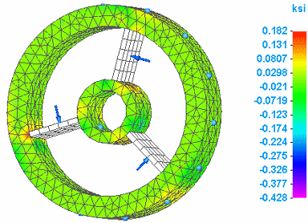

Result plots for mixed mesh models
In a mixed mesh model, which contains both solid and surface geometry, you can use the Home tab→Show group→Display Options menu→Plate Thickness check box to show and hide the plate thickness in the results plot.

The Plate Thickness display option also affects node values shown by the Minimum and Maximum markers and the Probe command. When Plate Thickness is deselected, these annotations indicate whether a surface value is located on the top (Top) or the bottom (Bot) surface of the plate. See the Probing analysis results help topic to learn more.
Some plots can be generated where result components cannot be produced for all of the geometry in the model. For example, an Intermediate Principal result component plot for stress or strain on a mixed mesh model that contains solids and plates (2D surfaces) can produce results for the solids but not for the surfaces. In this case, the result plots show contour colors on the solid, while the plate elements are displayed in the mesh color. The mesh color indicates that results are not applicable to the geometry.
